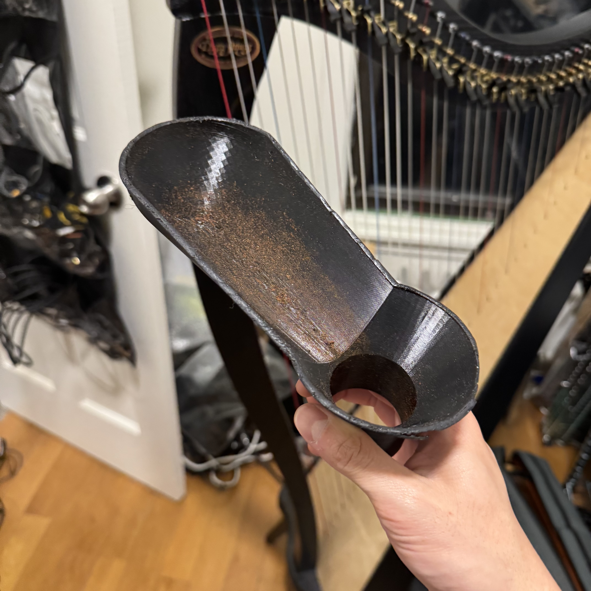
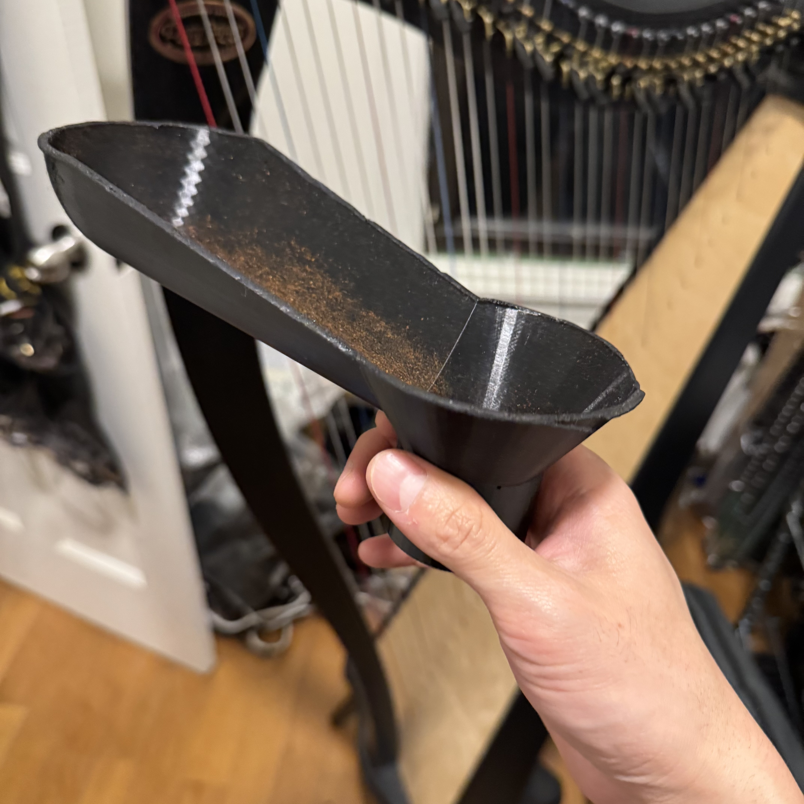
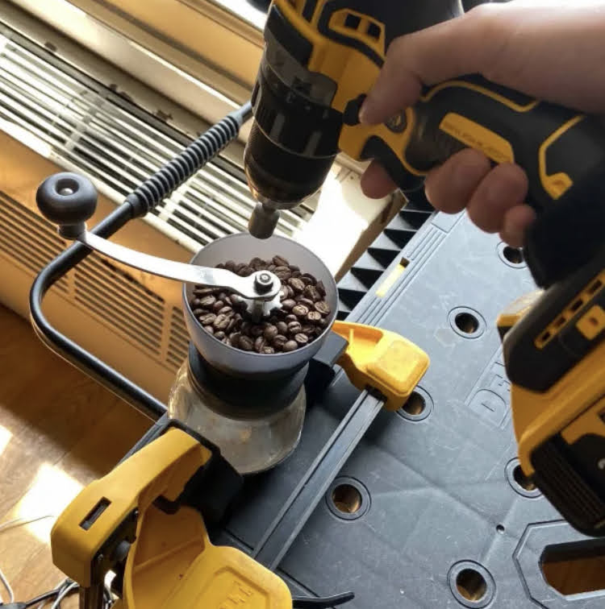

version 1
version one had side loading hopper idea because i wanted the beans to move like a little conveyor belt towards the grinder and avoid touching the drill chuck. this worked but made it unbalanced when shoring everything


i had some pipe adapters for trigger clamps (probably the most useful thing i've designed and printed for myself) which worked but took a little focus to use


version 0
i was gifted a hand grinder and aeropress on the same day. i don't think i really cared about home made coffe before. i also happened to be in a phase of life where i tried to use a drill with everything just to see if i could. this is how i got started.
